Calculadoras laborales para entender tu despido, tu paro o tu nómina sin leer el BOE.
Diseñada, desarrollada y posicionada por mí, de la idea a las búsquedas.
Vídeo animado con código (React + Remotion) y desarrollo asistido por IA.
El reto
Una sola pregunta: «¿cuánto me corresponde?»
La información laboral está repartida entre el BOE, la Seguridad Social y Hacienda, y escrita en lenguaje legal.
Calcula lo tuyo responde en segundos, sin registro y sin que los datos salgan del dispositivo.
La portada se organiza por lo que te ha pasado, no por nombres técnicos. Cada calculadora
abre con una respuesta rápida y termina en un resultado que se lee de un vistazo, con opción de guardarlo en PDF, compartirlo como imagen o enviarlo por WhatsApp.
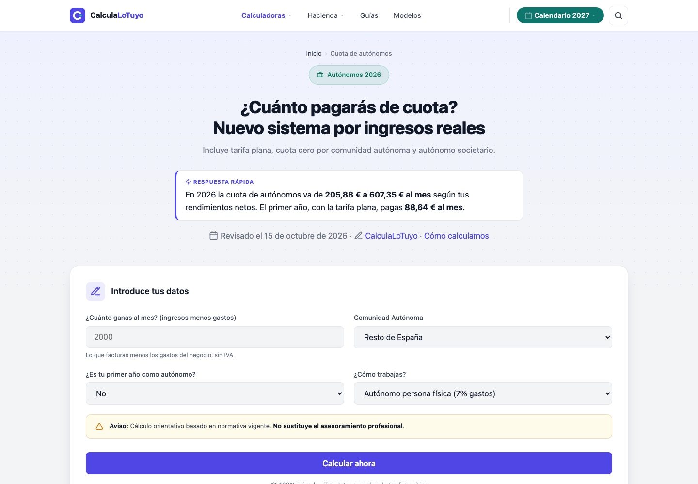
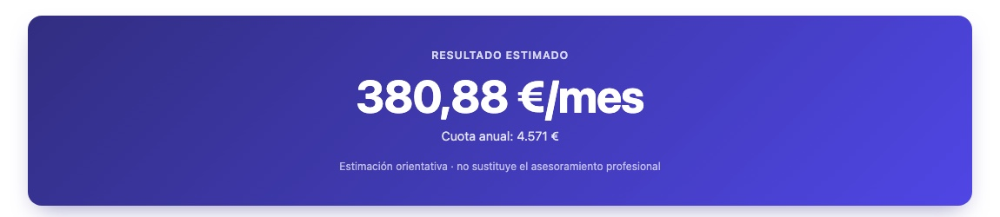
Calculadora de autónomos: respuesta rápida arriba, formulario claro y un resultado grande.
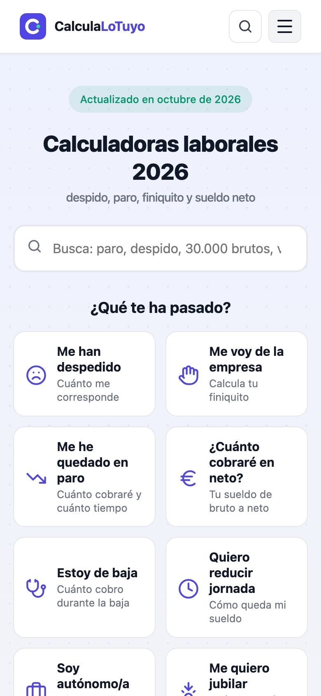
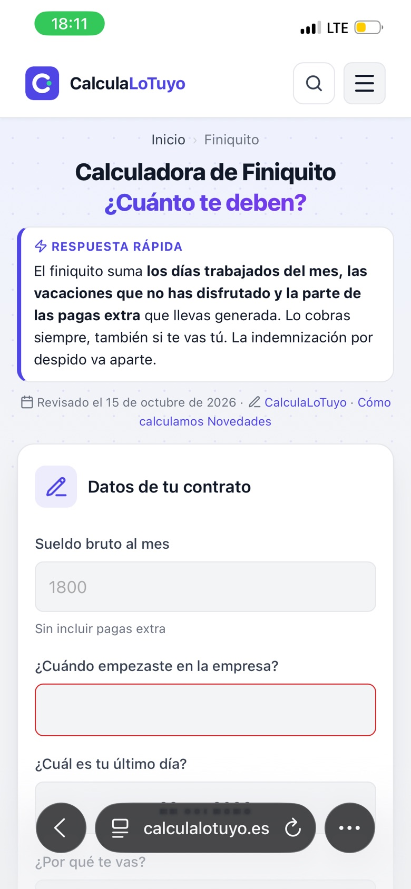
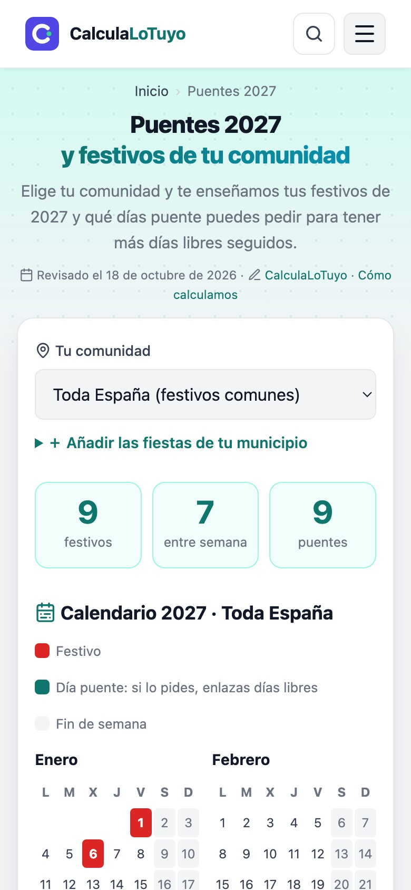
Y en el móvil: el mismo diseño, pensado para pantallas pequeñas.
Anatomía de una página
Cada página sigue el mismo orden
Tomando «Pagas extra» como ejemplo: primero se entiende con un caso real, después se confirma con la ley,
se resuelven las dudas y se acompaña a la persona hacia lo siguiente que va a necesitar.
1
Un caso real, paso a paso
Antes que la teoría, simulamos un caso: Sergio, comercial en Sevilla, con su sueldo, sus pagas y
el cálculo línea a línea. Se entiende sin saber de nóminas y funciona como respuesta concreta para quien busca justo eso.
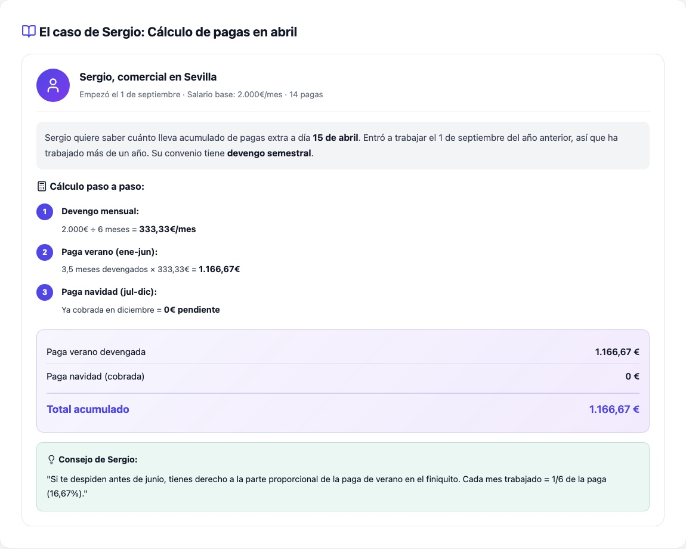
2
Lo que dice la ley y lo que dice tu convenio
Después, la norma explicada en llano: qué garantiza el Estatuto de los Trabajadores, qué decide el convenio
y cómo afectan la Seguridad Social, el IRPF y los casos especiales.
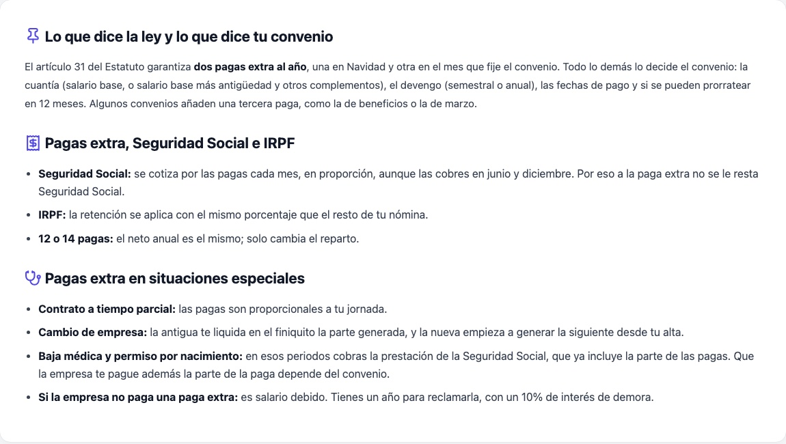
3
Preguntas frecuentes
Las dudas reales de la gente, en formato pregunta y respuesta. Sirven a quien lee y también a los
buscadores y a las IA, que pueden citar la respuesta exacta.
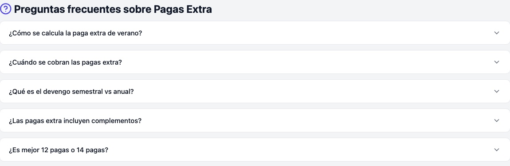
4
Calculadoras y guías relacionadas
Para no dejar a la persona en un callejón sin salida, cada página enlaza lo siguiente que va a necesitar
(el finiquito, el sueldo neto, el IRPF) y las guías para entender el porqué. Además refuerza la estructura interna de la web.
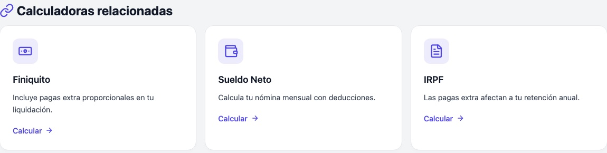
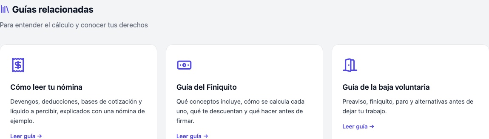
5
Algo de valor para llevarte
La web no solo calcula: ofrece 14 modelos y plantillas gratis en Word, PDF y Excel (cartas de baja voluntaria,
solicitudes de reducción de jornada o vacaciones, facturas…), sin registro. Es lo que hace que merezca la pena volver.
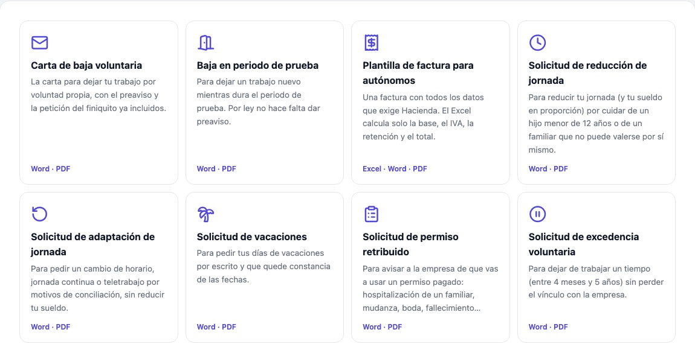
Lo que no se ve
Rigor, búsquedas y velocidad
Una web de derechos y de dinero tiene que ser fiable, encontrarse fácil y cargar rápido. Esto es lo que hay detrás.
Rigor
Cálculos contrastados
El motor de IRPF está contrastado con el algoritmo de retenciones de la Agencia Tributaria,
las cifras legales viven en un único archivo y cada guía muestra su fecha de revisión y su fuente oficial. En octubre de 2026 contrasté una a una con el BOE todas las cifras del IRPF y la Seguridad Social, y corregí lo que encontraron dos auditorías externas.
pruebas automáticas
✅ Paro: 1.800 €/mes, 2 años, sin hijos → tope máximo 1.225 € y 8 meses
✅ Despido improcedente: 28.000 €/año, 5 años → 12.658 €
✅ Lotería: el Gordo (400.000 €) → te llegan 328.000 €
✅ Renta: 21.000 € de un pagador → no está obligado
✅ 0 enlaces rotos en toda la web
… y más de 30 comprobacionesTodo bien ✅
Velocidad
42 KB al entrar y cero frameworks
HTML, CSS y JavaScript puros, tipografía del sistema, iconos en un único SVG y cálculos en el navegador:
no hay servidor ni esperas. La analítica se carga después de la página y el buscador, solo cuando se usa.
Tiempo hasta ver lo principal, antes4,9 s
Tiempo hasta ver lo principal, ahora2,1 s
Rendimiento
Accesibilidad
Buenas prácticas
SEO
Lighthouse en móvil sobre la web publicada (22 oct. 2026, red 4G simulada). Otras páginas: paro 99, lotería de Navidad 99 y sueldo neto 97.
SEO
Más de 130 páginas pensadas para búsquedas reales
Partí de lo que la gente escribe de verdad en el buscador y creé grupos de páginas por intención
(bruto a neto, paro, despido) sin contenido duplicado: solo existe una página cuando aporta un resultado distinto. Cuando varias páginas solo cambiaban la cifra, las uní en una tabla: menos páginas, más útiles.
Con sitemap, datos estructurados, Search Console, Bing e IndexNow.
calculalotuyo.es
Calculadora Laboral 2026: despido, finiquito, paro y nómina
Calcula gratis tu indemnización por despido, finiquito, paro, sueldo neto e IRPF con las cifras de 2026. 21 calculadoras y 17 guías basadas en el BOE.
GEO · buscadores de IA
Fácil de citar para una IA
Cada vez más gente pregunta a un asistente en vez de buscar en Google. Por eso hay un llms.txt,
la respuesta va al principio de cada página y existe un informe con sus datos en CSV.
llms.txt
# CalculaLoTuyo> Calculadoras laborales gratuitas para España (2026): despido, finiquito, paro, sueldo neto, IRPF…## Cifras clave de 2026
- Salario mínimo (SMI): 1.221 € al mes en 14 pagas (17.094 € al año). IPREM: 600 € al mes.
Blog · Novedades
Actualidad explicada, con la fuente oficial
Una sección de Novedades con artículos neutrales sobre lo que cambia en tu sueldo, tu paro o tus impuestos:
cada cifra sale del BOE o del INE y se calcula con el mismo código que la web. Fotos en blanco y negro con un toque
de color por categoría, filtro por temas, RSS y marcado de noticia para Google.
novedades
Calendario Festivos 2027 en España: el calendario oficial
Pensiones Subida de las pensiones en 2027: cuánto subirán
Impuestos Nueva deducción del 10 % por alquiler en la renta
Sueldo IPC al 4,9 % en septiembre: qué significa
Guías y accesibilidad
Qué hacer, paso a paso
Guías «Qué hacer si…» (te despiden, te quedas en paro, te pones de baja o vas a tener un hijo) con los plazos
en orden. Y una web usable con teclado: enlace para saltar al contenido, foco visible y sin animaciones
para quien las desactiva.
qué hacer si…
Despido → 20 días hábiles
Paro → 15 días hábiles
Baja → 60 % y luego 75 %
Un hijo → 19 semanas
[Tab] Saltar al contenido ✅
Automatización
Un comando regenera toda la web
Con más de 130 páginas, editar una a una es imposible. Scripts de Python generan cada familia de páginas
a partir de una plantilla y un archivo de datos. Para pasar de 2026 a 2027 se actualizan las cifras
y se vuelve a lanzar. Si algún paso falla, se para y avisa antes de publicar. Además, una revisión mensual programada vigila los cambios del BOE.
terminal
$ sh _herramientas/regenerar.sh
→ minifica el CSS
→ sueldos, paro y despido
→ calendario por ciudades
→ modelos, informe, jubilación y renta
→ novedades (blog) y guías paso a paso
→ SEO final, títulos y respuestas rápidas
→ menú, iconos y buscador
→ pruebas: cálculos, enlaces e iconos
→ sitemap y aviso a Bing
Contenido para redes
La web, también en Instagram
Reels y carruseles con la misma identidad que la web: colores, tipografía y cifras oficiales.
Cada pieza responde a una duda laboral concreta en pocos segundos y lleva a su calculadora.
Reels de @calculalotuyo, animados con código (React + Remotion).
Qué he aprendido
Pensar el producto entero
Que se vea bien no basta si no se encuentra, no carga rápido o no es fiable. Y más páginas no siempre es mejor: lo que cuenta es que cada una resuelva algo. La web lleva online desde
el 14 de octubre de 2026, así que aún es pronto para hablar de resultados: cuando Search Console tenga datos, los añadiré aquí.